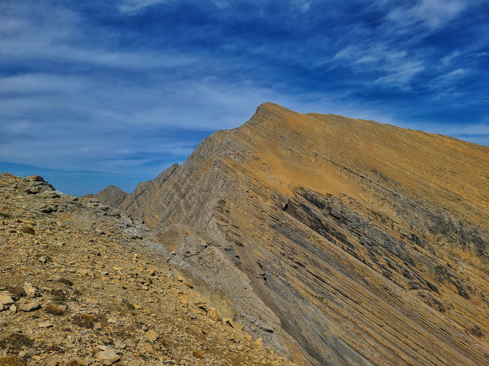

Elevation: 9,356ft or 2,852M Coordinates: 47° 32' 6'' N, 113° 34' 57'' W
Length: 8.4 miles or 13.5 KM Elevation gain: 5,531ft or 1,685M
Where is Holland Peak?
On Montana State Hwy 83, approximately 28 miles north of Seeley Lake, or 2 miles south of Condon—mile marker 39—turn east on the Rumble Creek Rd. Follow road four miles to parking area, which is a quarter mile or a bit more past the lookout. The parking area is large enough for several vehicles.
Always check the weather BEFORE you go. BE PREPARED
Step 2: Get an EARLY start!
Holland Peak can get strong afternoon winds The summit ridge is not the place to be with strong winds
Step 3: Break down the hike
Holland Peak can be an intimidating so break the hike down into these sections:
Trailhead to Lower Rumble Creek Lake
Lower to Upper Rumble Creek Lake
Upper Rumble Creek Lake to Summit Ridge
Summit Ridge to Summit
Step 4: Enjoy!
Holland Peak is a special place, enjoy every step
Take only pictures, leave only footprints.
Breaking down the hike:
Trailhead to Lower Rumble Creek Lake
This is one of the harder sections with 2,000 vertical feet in roughly 2 miles, its steep and in the trees so it drags.
The view is worth every step as you get a glimpse of Lower Rumble Creek Lake.
Lower to Upper Rumble Creek Lake
This is where the hike starts to feel truly alpine, crystal clear water and steep walls all around. Upper Rumble Creek Lake is even better than the lower lake. pure mountain beauty.
Upper Rumble Creek Lake to Summit Ridge
This is where the hike goes from a hike to a climb, the "trail" goes straight up an exposed ridge. This takes you to a high plataue, where you get your first look at the summit ridge.

Summit Ridge To Summit
The most dangerous part of the entire hike, this knife edge ridge has a drop of ~1,300ft on one side and ~400ft on the other. This is why it is important to NOT DO THIS WHEN WINDY one miss step could be your last.
The Summit
The final couple hundred vertical feet always hurt, one step in front of the other!
Congratulations! you are on top of Holland Peak, soak in the views and be proud of your accomplishment.


.jpg "Upper Rumble Creek Lake")